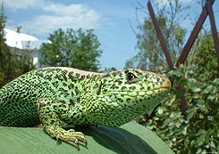

Reptiles
Entre los reptiles están los siguientes:
Barba amarilla (Botrox atrox)
tamagás (Botrox nasuta)
Porthidium nasutum
boa (Constrictor imperatur)
cascabel (Crotalus durissus)
tortuga verde (Chelonia mydas)
caimán café (Caiman cocodrylus fuscus)
lagarto ( Cocodrylus acutus)

serpiente de coral
Acanthopleura granulata
Basiliscus vittatus
Otros reptiles son las iguanas que se mimetizan con los tonos variados del bosque; las tortugas de agua dulce como la caguama (Caretta caretta)